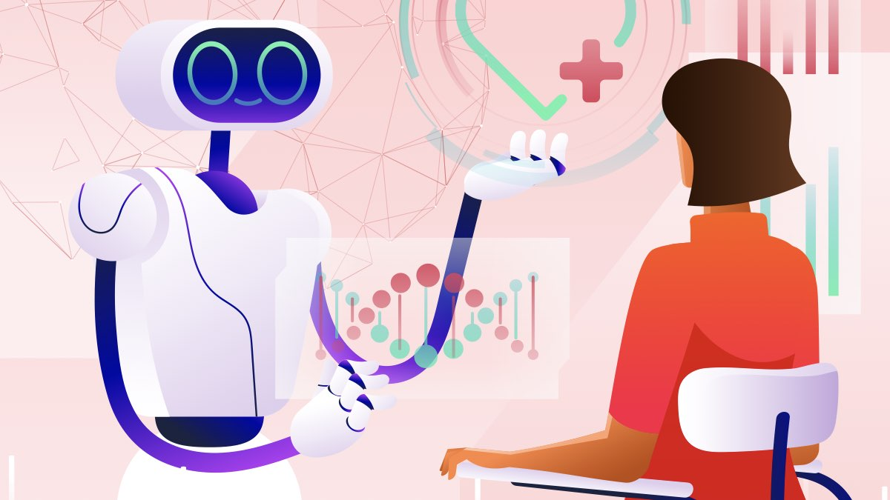

Yapay Zeka
Google, Yeni Yapay Zeka Modelini Duyurdu
Google'ın Gemini 2.5 Flash'ı nihayet erişime açıldı: Üstelik hiç olmadığı kadar hızlı!
Haberi Oku
(Güneş ve Ay simgelerine tıklayarak sayfanın gündüz gece ayarlarını yapabilirsiniz.)
Yayınlanma Tarihi: 9 Mayıs 2025
Yayınlayan Kişi: Bora Şenel 232211057
Akademisyenler ve Araştırmacılar için En İyi Yapay Zeka Araştırma Araçları
En iyi yapay zeka araştırma araçları araştırmacılar, akademisyenler ve öğrenciler için çok önemli hale geldi ve büyük miktarda veriyi analiz etmelerini, ilgili akademik makalelere erişmelerini ve önemli içgörüleri hızlı ve doğru bir şekilde çıkarmalarını sağladı.
İster bir proje için kaynak arayan bir öğrenci ister alanınızdaki en son gelişmelerden haberdar olmayı amaçlayan bir akademisyen olun, yapay zeka araştırma asistanları araştırma sürecini kolaylaştırmak için verimlilik, otomasyon ve daha akıllı yollar sağlar.
Yapay Zeka Araştırma Aracı Nedir?
Yapay zeka araştırma aracı, araştırmacılara, akademisyenlere ve öğrencilere araştırma sürecinin çeşitli yönlerinde yardımcı olmak için tasarlanmış yapay zeka (AI) tarafından desteklenen bir yazılım uygulamasıdır. Bu araçlar, kullanıcıların ilgili akademik makaleleri bulmalarına, verileri analiz etmelerine, bilgileri özetlemelerine, alıntılar oluşturmalarına ve literatür incelemelerini verimli bir şekilde geliştirmelerine yardımcı olmak için makine öğrenimi, doğal dil işleme (NLP) ve otomasyondan yararlanır.
Bilimsel yayınların ve verilerin hacminin artmasıyla birlikte, yapay zeka destekli araştırma asistanları iş akışlarını kolaylaştırır, doğruluğu artırır ve geleneksel olarak yoğun manuel çaba gerektiren görevleri otomatikleştirerek zamandan tasarruf sağlar.
En İyi 7 Yapay Zeka Aracı
Elicit, akademisyenler ve profesyoneller için araştırma sürecini kolaylaştırmak üzere tasarlanmış yapay zeka destekli bir araştırma asistanıdır. Elicit, gelişmiş dil modellerinden yararlanarak araştırma makalelerini özetleme, ilgili verileri çıkarma ve bulguları sentezleme gibi görevleri otomatikleştirir, böylece literatür incelemelerini ve veri analizini hızlandırır.
Consensus, araştırmacıların bilimsel literatürü daha verimli bir şekilde bulmalarına ve anlamalarına yardımcı olmak için tasarlanmış bir yapay zeka akademik arama motorudur. Consensus, gelişmiş dil modellerinden yararlanarak araştırma sorularına kanıta dayalı yanıtlar sağlar ve literatür inceleme sürecini kolaylaştırır.
Scite, araştırmacıların Smart Citations (Akıllı Atıflar) aracılığıyla bilimsel makaleleri keşfetmelerine ve değerlendirmelerine yardımcı olmak için tasarlanmış yapay zeka destekli bir araştırma aracıdır. Scite, 200 milyondan fazla bilimsel kaynaktan 1,2 milyardan fazla alıntı ifadesini analiz ederek, alıntılara bağlam sağlar ve destekleyici veya zıt kanıtlar sunup sunmadıklarını gösterir.
Semantic Scholar, Allen Institute for AI tarafından geliştirilen, akademisyenlerin bilimsel literatürü verimli bir şekilde keşfetmelerine ve anlamalarına yardımcı olmak için tasarlanmış ücretsiz ve yapay zeka destekli bir araştırma aracıdır. Gelişmiş yapay zeka ve mühendislik kullanarak, bilimsel metinlerin semantiğini kavrar ve kullanıcıların akademik araştırmaların geniş manzarasında daha etkili bir şekilde gezinmelerini sağlar.
Daha önce Typeset.io olarak bilinen SciSpace, araştırmacılara ve öğrencilere bilimsel literatürde gezinme konusunda yardımcı olmak için tasarlanmış yapay zeka destekli bir platformdur. Gelişmiş yapay zekadan yararlanan SciSpace, karmaşık akademik metinleri basitleştirmek için araçlar sunarak araştırmayı daha erişilebilir ve verimli hale getirir.
ResearchRabbit, akademisyenlerin bilimsel literatürü keşfetme ve inceleme yöntemlerini dönüştüren, yapay zeka destekli ücretsiz bir araştırma aracıdır. Gelişmiş algoritmalar kullanarak, kişiselleştirilmiş öneriler ve etkileşimli görselleştirmeler sağlar ve araştırmacıların büyük miktarda akademik içerikte verimli bir şekilde gezinmesine ve analiz yapmasına olanak tanır.
AnswerThis, akademik araştırma sürecini kolaylaştırmak için tasarlanmış yapay zeka destekli bir araştırma asistanıdır. AnswerThis, 200 milyondan fazla araştırma makalesini ve güvenilir internet kaynaklarını analiz ederek kapsamlı literatür incelemeleri oluşturur, ayrıntılı kaynak özetleri sağlar ve araştırma materyallerinin yazımını ve organizasyonunu geliştirmek için araçlar sunar.
Google'ın Gemini 2.5 Flash'ı nihayet erişime açıldı: Üstelik hiç olmadığı kadar hızlı!
Haberi Oku
Yepyeni özelliklere sahip Nintendo Switch 2 resmî olarak tanıtıldı: İşte özellikleri ve fiyatı!
Haberi Oku
Yapay zekanın iş dünyasındaki etkileri her geçen gün artıyor. Uzmanlar, önümüzdeki 10 yıl içinde birçok mesleğin dönüşeceğini öngörüyor.
Haberi Oku